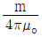
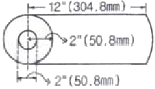
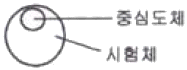
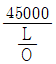
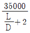
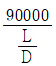
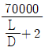
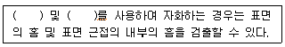
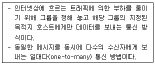

자기비파괴검사기사(구) (2009-03-01 기출문제)
1과목: 자기탐상시험원리
1. 다음 중 단조품의 자분탐상시험시 소성이 적은 변화에 의해 나타나는 판정 대상이 아닌 자분모양으로서 과도한 전류를 사용한 경우에 잘 나타나므로 자화전류를 낮추어 재시험하면 사라지는 자분모양은 무엇인가?
- 단류선(flow line)
- 편석지시(segregation indication)
- 국부냉간가공(local cold working)
- 개재물 지시(inclusion indication)
(정답률: 알수없음)

2. 공기 중에 자극의 세기 m[Wb]으로 부터 나오는 자력선의 수는? (단, μo는 진공 중의 투자율이다.)
- 1/m
- m
- m/μo

(정답률: 알수없음)
3. 선형자화법으로 길이가 9인치, 직경이 3인치인 환봉을 코일로 3회 감아 검사할 때의 전류값은?
- 300A
- 4500A
- 5000A
- 6000A
(정답률: 알수없음)
4. 10[Oe] 에서 자분모양이 나타나는 A형 표준시험편을 이용하여 자게의 강도가 20[Oe] 되는 전류값을 구하려고 한다. A형 표준시험편을 놓고 서서히 전류를 증가시켜 500[A] 에서 자분모양이 나타났다면 구하려는 전류값[A]은?
- 100
- 500
- 1000
- 2000
(정답률: 알수없음)
5. 다음 중 강재의 자화곡선에 영향을 주는 인자와 가장 거리가 먼 것은?
- 합금 성분
- 열처리 상태
- 탄소 함량
- 강재의 질량
(정답률: 알수없음)
6. 다음 중 전류관통법과 자속관통법의 차이는 무엇인가?
- 자속의 발생 방식
- 자분과 와전류의 탐상 방식
- 형광과 비형광의 자분 종류
- 거치식과 휴대식인 장치의 크기
(정답률: 알수없음)
7. 다음 중 방사선투과시험의 장점이 아닌 것은?
- 내부결합의 검출이 가능하다.
- 물질의 큰 조성 변화 검출이 가능하다.
- 검사결과를 영구적으로 기록할 수 있다.
- 방사선빔 방향에 평행한 판형결함의 검출이 용이하다.
(정답률: 알수없음)
8. 다음 중 납 용기나 철 케이스 내에 들어 있는 물질의 양을 검사하는데 효과적인 비파괴검사법은?
- 누설검사
- 침투탐상시험
- 초음파탐상시험
- 중성자투과시험
(정답률: 알수없음)
9. 결함의 종류에 따른 비파괴시험 방법을 열거한 것으로 적절하지 않은 것은?
- 언더컷의 검출은 방사선투과시험
- 내부기공의 검출은 자분탐상시험
- 변형은 게이지를 이용한 육안검사
- 표면에 개방된 균열의 검출은 침투탐상시험
(정답률: 알수없음)
10. 다음 중 침투탐상제를 이용한 누설시험에서 침투탐상시험과는 달리 포함되지 않아도 되는 절차는?
- 전처리
- 침투현상
- 세척관리
- 현상처리
(정답률: 알수없음)
11. 다음 비파괴검사법 중 발생 중인 결함의 검출에 가장 효과적인 시험법은?
- 음향방출시험
- 초음파탐상시험
- 와전류탐상시험
- 중성자투과시험
(정답률: 알수없음)
12. 다음 중 발포누설시험법(Bulbble Test)의 장점이 아닌 것은?
- 큰 누설을 쉽게 찾음
- 누설부위를 직접 검출 가능
- 시험이 간단하고 비용이 저렴
- 시험방법 중 작은 결함에 대한 감도가 가장 우수
(정답률: 알수없음)
13. 헬륨질량분석 진공시스템 내부표면의 불순물 등에 흡수되어 있던 가스가 천천히 방출되면서 나타나는 허위누설을 무엇이라 하는가?
- 안개현상(Fog up)
- 가스유출(Out gassing)
- 장애현상(Hang up)
- 흐름신호(Flow signal)
(정답률: 알수없음)
14. 다음 중 비파괴검사의 종류와 그 특성을 연결한 것으로 틀린 것은?
- 음향방출시험-동적 결함검사
- 와전류탐상시험-전도체의 표면검사
- 전자초음파공영법-고온재료의 접촉검사
- 핵자기공명 단층영상법-수소원자핵의 분포를 영상화
(정답률: 알수없음)
15. 다음 중 초음파탐상시험에서 두꺼운 판의 용입부족을 검출하는데 가장 좋은 방법은?
- 평행 주사
- 지그재그 주사
- 탠덤(tandem) 주사
- 오비탈(orbital) 주사
(정답률: 알수없음)
16. 비자성체의 표면 및 표면직하 결함을 표면 개구 여부에 관계없이 검출하고자 할 때 다음 중 어느 방법이 가장 적합한가?
- 자분탐상시험
- 침투탐상시험
- 음향방출시험
- 와전류탐상시험
(정답률: 알수없음)
17. 다음 중 방사선투과시험과 비교한 초음파탐상시험의 장점이 아닌 것은?
- 시험체 두께에 대한 영향이 적다.
- 미세한 균열성 결함의 검사에 유리하다.
- 결함의 형태와 종류를 쉽게 할 수 있다.
- 한쪽 면에서만 접근할 수 있어도 탐상이 가능하다.
(정답률: 알수없음)
18. 와전류탐상시험에서 프로브형 탐촉자로 평판 형태의 시험편을 검사할 때, 시험편의 표면과 코일 사이의 간격이 변화하면 와전류 신호가 발생한다. 이러한 현상을 정의하는 용어는?
- 충전율(fill factor)
- 리프트 오프(lift off)
- 위상분별(phase analysis)
- 모서리 효과(edge effecf)
(정답률: 알수없음)
19. 다음 비파괴검사법 중 알루미늄합금에 대한 결함 검출 감도가 가장 나쁜 것은?
- 방사선투과시험
- 초음파탐상시험
- 자분탐상시험
- 침투탐상시험
(정답률: 알수없음)
20. 방사선투과시험에서 사진처리작업 중 정착얼룩과 정착액의 성능저하를 방지하기 위해 처리하는 작업은?
- 현상처리
- 정지처리
- 정착처리
- 수세처리
(정답률: 알수없음)
2과목: 자기탐상검사
21. 다음 중 탄소 함유량이 높은 공구강, 스프링강과 같이 시험체의 보자성(Retentivity)이 큰 경우에 적용되며 표면의 불연속 검출에 국한되는 자분탐상 검사방법은?
- 잔류법
- 연속법
- 습식법
- 건식법
(정답률: 알수없음)
22. 자분탐상검사시 시험면을 분할하여 시험하는 경우와 주의해야 할 내용 중 틀린 것은?
- 시험체가 크거나 너무 길어 1회의 자회로 시험할 수 없는 경우
- 시험체를 분할한 경계부는 이웃끼리의 유효자계가 겹쳐지지 않도록 주의해야 한다.
- 시험체의 모양이 복잡하기 때문에 1회 자화로 필요한 유효자계 강도를 시험체에 가할 수 없는 경우
- 시험체의 단면이 급변하여 1회 자화로 시험하면 시험면의 유효자계 강도가 너무 강하거나 약할 경우
(정답률: 알수없음)
23. 다음 중 두께가 20mm 인 시험체를 프로드 간격 5인치로 선형자화할 때 요구되는 전류값으로 옳은 것은?
- 100A
- 250A
- 600A
- 1000A
(정답률: 알수없음)
24. 자분탐상검사 중 자기펜자국인지 아닌지를 가장 효과적으로 알아보는 방법은?
- 전류를 더 높여 검사한다.
- 전압을 더 낮추어 검사한다.
- 탈자한 뒤 원하는 방향으로 자화한다.
- 육안검사를 실시하여 다른 방향으로 검사한다.
(정답률: 알수없음)
25. 다음 중 자분탐상장치 및 재료와 안전에 주의하여야 할 대상을 잘못 연결한 것은?
- 자외선등-화상
- 건식자분-방진
- 습식자분-화재
- 자화케이블-감전
(정답률: 알수없음)
26. 형광자분탐상검사에 사용되는 자외선등에 대한 설명으로 틀린 것은?
- 고압수은등에 자외선 필터를 부착하여 사용한다.
- 사용되는 파장은 320~400nm 범위에 근자외선이다.
- 관찰에 필요한 자외선의 강도는 최소 800~1000μW/cm2 이상이다.
- 사용되는 자외선의 강도는 필터 앞면으로부터 멀어질수록 거리의 제곱으로 증가한다.
(정답률: 알수없음)
27. 다음 중 자분탐상 검사액의 분산매가 갖추어야 할 성질로 틀린 것은?
- 저점도
- 저휘발성
- 저유해성
- 저인화점
(정답률: 알수없음)
28. 설피형 자분탐상장치의 점검시 교류자화전류계의 자화전류는 파고치로 나타나고 표준 교류전류계의 지시치는 실효치로 나타난다. 이 실효치는 비례 계산에 의해 산출한 값을 몇 배하여 파고치로 고쳐서 비교하는가?
- √2배
- 2배
- 4배
- 8배
(정답률: 알수없음)
29. 다음 중 자분탐상검사에서 일반적으로 가장 좋은 검출 감도를 갖는 자분의 조합인 것은?
- 형광 건식자분
- 형광 습식자분
- 비형광 습식자분
- 비형광 건식자분
(정답률: 알수없음)
30. 다음 중 자분탐상검사를 하기에 가장 적합한 재질은?
- 구리 합금
- 니켈 합금
- 티타늄 합금
- 알루미늄 합금
(정답률: 알수없음)
31. 다음 중 일반적으로 전류관통법으로 검사할 때 가장 깊이 존재하는 인공결함을 검출할 수 있는 자화전류와 자분의 조합으로 옳은 것은?
- 교류-건식
- 교류-습식
- 직류-건식
- 직류-습식
(정답률: 알수없음)
32. 자분탐상검사에서 발생된 자력선(Magnetic force line)의 성질을 틀리게 설명한 것은?
- 서로 교차하지 않는다.
- S극에서 나와서 N극으로 들어간다.
- 극에서 멀어질수록 밀도는 감소한다.
- 닫힌 회로(closed loop)를 형성한다.
(정답률: 알수없음)
33. 다음 중 규소강판을 적충하여 만든 철심에 코일을 감사 직류 또는 교류 자화하여 시험부에 접촉시키고 자극 사이의 표면 결함을 검출하는 장비는?
- 극간식 자화장치
- 축통전법 자화장치
- 전류관통법 자화장치
- 프로드식 자화장치
(정답률: 알수없음)
34. 자분탐상검사의 목적을 만족시키는 탐상 단계를 옳게 나타낸 것은?
- 전처리→자화→자분의 적용→관찰→판정→기록→탈자→후처리
- 전처리→자분의 적용→자화→관찰→판정→후처리→탈자→기록
- 전처리→자화→자분의 적용→판정→탈자→관찰→후처리→기록
- 전처리→자분의 적용→자화→관찰→판정→탈자→기록→후처리
(정답률: 알수없음)
35. 전류관통법으로 자분탐상검사할 때 건식 또는 습식, 형광 또는 비형광 자분의 자기특성, 자분 농도 및 자화장치의 기능 비교에 사용되는 시험편은?
- STB-G 시험편
- 스텝 웨지(step wedge) 시험편
- 비중계(hydrometer)
- 케토스링(ketos ring) 시험편
(정답률: 알수없음)
36. 자분탐상검사에서 자분모양의 관찰에 대한 설명으로 옳은 것은?
- 가급적 관찰면에 대하여 수평인 상태의 시각으로 관찰한다.
- 잔류법 적용시는 형광자분의 양을 규정 이상으로 높여 관찰한다.
- 연속법 적용시는 자화를 정지한 후 자분을 적용하여 관찰한다.
- 조사광이 관찰면에 대하여 반사광이 없는 위치와 각도에서 관찰한다.
(정답률: 알수없음)
37. 다음 중 일반적으로 잔류법에 적용이 곤란한 자화전류는?
- 직류
- 교류
- 충격전류
- 단상반파전류
(정답률: 알수없음)
38. 다음 중 사용 중에 있는 시험체를 자분탐상검사하여 찾아낼 수 있는 결함은?
- 기공(porosity)
- 핫티어(hot tear)
- 스트링거(stringer)
- 피로균열(fatigue cracks)
(정답률: 알수없음)
39. 그림의 봉을 원형자화법에 의해 자분탐상검사할 때 소요되는 전류는 몇 A 인가?

- 100
- 400
- 3000
- 12000
(정답률: 알수없음)
40. 자분탐상검사를 종료한 후, 필요에 의해서 탈자하고자 할 때 이용되는 탈자 방법의 설명으로 틀린 것은?
- 자분을 여러 번 뿌려 자계의 강도를 감소시킨다.
- 시험체를 코일의 자계로부터 점점 멀어지게 한다.
- 시험체는 움직이지 않고 전류 조작으로 자계의 강도를 감소시킨다.
- 직류를 사용하여 자계의 방향을 교대로 반전시키면서 자계의 강도를 점차 감소시킨다.
(정답률: 알수없음)
3과목: 자기탐상관련규격및컴퓨터활용
41. 압력용기에 대한 자분탐상시험의 합격기준(ASME Sec.VⅢ.Div.1 App.6)에 따른 결함의 평가에 관한 설명이다. 다음 중 옳지 않은 것은?
- 크기가 1mm 인 원형지시는 평가하지 않는다.
- 길이가 1.4mm 이고 폭이 0.6cm 인 지시는 원형지시로 합부 평가를 해야 한다.
- 길이가 2mm이고 폭이 0.5mm 인 지시는 선형지시로 합부 평가를 해야 한다.
- 길이가 2mm이고 폭이 0.5mm 인 지시는 불합격으로 평가해야 한다.
(정답률: 알수없음)
42. 철강 재료의 자분탐상 시험방법 및 자분 모양의 분류(KS D 0213)에서 가장 높은 유효자계의 강도로 자분모양이 나타나는 시험편은?
- A1-7/50(원형)
- A2-7/50(원형)
- A1-15/50(원형)
- A2-15/50(원형)
(정답률: 알수없음)
43. 보일러 및 압력용기에 대한 자분탐상시험의 표준지칭(ASME Sec.V.Art.25 SE-709)에 따라 그림과 같이 속이 빈 강자성체를 중심도체를 사용하여 자화할 때, 1회 자화로 유효하게 자화할 수 있는 시험체 원주상의 길이는?

- 중심도체 직경의 약 2배
- 중심도체 직경의 약 4배
- 중심도체 직경의 약 6배
- 중심도체 직경의 약 8배
(정답률: 알수없음)
44. 보일러 및 압력용기에 대한 자분탐상시험의 표준지칭(ASME Sec.V.Art.7)에서 규정한 선형자화법으로 탐상시험할 때 L/0=5 인 시험체의 경우에는 별도로 자화전휴를 규정하고 있다. 이 규정의 자화전류로 옳은 것은? (단, L : 시험체 길이, D : 시험체의 직경이다.)
- 암페어ㆍ턴=

- 암페어ㆍ턴=

- 암페어ㆍ턴=

- 암페어ㆍ턴=

(정답률: 알수없음)
45. 보일러 및 압력용기에 대한 자분탐상시험의 표준지칭(ASME Sec.V.Art.7)에 따른 탐상시험시 여러가지 불연속들이 나타나면 어떻게 해야 하는가?
- 시험체는 폐기되어야 한다.
- 불연속 부분을 제거 후 사용해야 된다.
- 균열의 깊이를 알고자 단면을 잘라 보아야 한다.
- 모든 지시는 참조규격의 합격기준에 따라 평가해야 한다.
(정답률: 알수없음)
46. 보일러 및 압력용기에 대한 자분탐상시험의 표준지칭(ASME Sec.V.Art.7)에서 작업장소를 변경하지 않고 계속하여 시험할 경우 자외선 강도의 최대 측정 주기는?
- 2시간
- 4시간
- 8시간
- 10시간
(정답률: 알수없음)
47. 철강 재료의 자분탐상 시험방법 및 자분모양의 분류(KS D 0213)에서 시험의 기록시 자화전류치는 파고치로 기재한다. 이 때 코일법일 경우 파고치에 부기하여야 할 내용은?
- 프로드간격
- 정류방식
- 코일의 치수, 권수
- 사용된 대비시험편
(정답률: 알수없음)
48. 압력용기에 대한 자분탐상시험의 합격기준(ASME Sec.VⅢ. Div.1 App.6)에서 관련지시로 간주하는 지시모양의 길이 기준으로 옳은 것은?
- 1/32인치 이하
- 1/32인치 초과
- 1/16인치 이하
- 1/16인치 초과
(정답률: 알수없음)
49. 보일러 및 압력용기에 대한 자분탐상시험의 표준지칭(ASME Sec.V.Art.7)에 따라 길이 1000m, 직경 75mm 인 강봉을 코일을 사용하여 탐상하는 경우 시험체를 몇 회로 분할하여 시험하여야 하는가?
- 1회
- 2회
- 3회
- 4회
(정답률: 알수없음)
50. 보일러 및 압력용기에 대한 자분탐상시험의 표준지칭(ASME Sec.V.Art.7)에 의한 프로드(Prod)법에 소요되는 전류의 양은 무엇에 따라 결정하는가?
- 프로드 간격
- 시험체의 직경
- 시험체의 길이
- 시험체의 모양
(정답률: 알수없음)
51. 철강 재료의 자분탐상 시험방법 및 자분 모양의 분류(KS D0213)에서 규정하고 있는 형광자분의 농도범위로 옳은 것은?
- 0.2~2 g/ℓ
- 2~4 g/ℓ
- 4~6 g/ℓ
- 6~ 8g/ℓ
(정답률: 알수없음)
52. 보일러 및 압력용기에 대한 자분탐상시험의 표준지칭(ASME Sec.V.Art.25 SE-709)에 따르면, 자화로 생긴 잔류자계가 다음 시험의 자분모양을 해석하는데 방해가 될 경우에는 탈자를 해야 한다. 완전 탈자 후 시험품의 자계강도는 몇 가우스(G) 이하가 되어야 하는가?
- 3
- 5
- 10
- 15
(정답률: 알수없음)
53. 철강 재료의 자분탐상 시험방법 및 자분 모양의 분류(KS D0213)에서 자화전류의 선택에 대한[보기]의 설명 중 ( )안에 알맞은 용어는?

- 교류, 맥류
- 직류, 맥류
- 직류, 충격전류
- 교류, 충격전류
(정답률: 알수없음)
54. 보일러 및 압력용기에 대한 자분탐상시험의 표준지칭(ASME Sec.V.Art.7)의 프로드법을 사용할 때 두께가 19mm(3/4인치)미만인 경우 프로드 간격 인치당 소요 전류값은?
- 90~110A
- 90~110mA
- 100~125a
- 100~125mA
(정답률: 알수없음)
55. 철강 재료의 자분탐상 시험방법 및 자분 모양의 분류(KS D0213)에 의한 용접부의 시험에서 용접 후 열처리 등의 지정이 있을 때 합부판정을 위한 자분탐상시험의 시기로 옳은 것은?
- 열처리 후에 시험한다.
- 용접완료 후 바로 시험한다.
- 열처리 전후 2회 시험한다.
- 용접완료 후 24시간 뒤에 시험한다.
(정답률: 알수없음)
56. 다음 중 컴퓨터 운영체제에 대한 설명으로 틀린 것은?
- 하드웨어와 응용 프로그램간의 인터페이스역할을 한다.
- CPU, 주기억장치, 입출력장치 등의 컴퓨터 자원을 관리한다.
- 컴퓨터 시스템의 전반적인 동작을 제어하는 시스템프로그램의 집합이다.
- 사용자가 작성한 원시프로그램을 기계어로 된 목적프로그램으로 변환한다.
(정답률: 알수없음)
57. 다음 중 인터넷상에서 정보와 의견을 교환하기 위한 토론그룹은?
- 고퍼
- 아키
- 텔넷
- 유즈넷
(정답률: 알수없음)
58. 헤커가 해킹을 하여 사용자 권한을 얻어낸 후 시스템 관리자의 권한을 훔치고, 이후 자신이 다음에 재 침입할 것을 대비하여 만들어 놓고 나가는 프로그램을 무엇이라 하는가?
- 웜
- 스파이웨어
- 애드웨어
- 백도어
(정답률: 알수없음)
59. 다음이 설명하고 있는 통신 방식은?

- 멀티캐스트
- 유니캐스트
- 애니캐스트
- 라우팅
(정답률: 알수없음)
60. 다음은 국가를 나타내는 도메인들이다. 열국에 해당하는 도메인 명은?
- au
- ca
- uk
- fr
(정답률: 알수없음)
4과목: 금속재료학
61. 100배로 확대된 다결정 금속재료의 내부조직 사진에서 평방인치당 결정립자의 수가 64개일 때 이 금속 재료의 ASTM 결정입도는?
- 3
- 5
- 7
- 9
(정답률: 알수없음)
62. 다음 중 강제적으로 완전 탈산시킨 강은?
- Killed 강
- Rimmed 강
- Capped 강
- Semi-killed 강
(정답률: 알수없음)
63. 공정형 상태도를 나타내는 대표적인 합금은?
- Cu-Ni
- Au-Ag
- Al-Si
- Cd-Hg
(정답률: 알수없음)
64. 구리에 함유된 불순물 중 전기 전도도에 가장 악영향을 미치는 원소는?
- Ti
- Pb
- Mn
- Au
(정답률: 알수없음)
65. 금속의 회복(recovery)에 대한 설명 중 틀린 것은?
- 결정 내부의 변형에너지가 감소하는 현상이다.
- 전기저항은 회복의 과정에서 서서히 증가하는 현상이다.
- 결정 내부의 항복강도가 감소하는 현상이다.
- 전위의 일부가 소멸되거나 또는 재배열되는 현상이다.
(정답률: 알수없음)
66. 다음 초경합금 분말을 혼합 제조할 때 가열온도가 가장 높은 조건은?
- Ti + C
- TiO2 + C
- W +TIO2 + C
- WC + TIO2 + C
(정답률: 알수없음)
67. 특수강 중에 각종 원소의 첨가 효과를 설명한 것으로 틀린 것은?
- Ni는 탄소와의 친화력이 낮고, 페라이트 고용된다.
- Cr은 소입성을 개선하는 효과가 Ni 보다 우수하다.
- Mo을 첨가한 Mo 강은 400℃ 부근까지 고온강도를 개선한다.
- Mn의 첨가량이 1.0% 이상이 되면 결정입자를 미세하게 하고 취성을 방지한다.
(정답률: 알수없음)
68. 일반적으로 상용한도가 300℃까지 사용할 수 있는 열전대는?
- Pt-Pt-Rh
- Cu-Constantan
- Chromel-Alumel
- Fe-Constantan
(정답률: 알수없음)
69. Mg 금속에 대한 설명으로 틀린 것은?
- 비중이 약 1.7 정도이다.
- 알루미늄보다 쉽게 부식한다.
- 면심입방격자(FCC)구조를 갖는다.
- Zr의 첨가로 결정립은 미세하고, 희토류원소의 첨가로 고온크리프 특성이 우수하다.
(정답률: 알수없음)
70. 다음 동합금에 대한 설명으로 틀린 것은?
- Cu-Be 합금은 분산간화형 합금이다.
- 60%Cu-40%Zn 합금은 Muntz metal이라 하고 α상과 β상을 포함한 2중 조직을 하고 있다.
- 탄피황동을 부식분위기에 놓았을 때 발생하는 응력부식 균열을 season cracking 이라 한다.
- 70%Cu-30%Zn 합금은 탄피황동(Cartridge brass)으로 불리며 강도와 연성이 우수하다.
(정답률: 알수없음)
71. Cr계 스테인리스강의 취성에 대한 설명 중 틀린 것은?
- 고온취성은 700℃ 부근에서 나타난다.
- 저온취성은 페라이트 강에서 나타난다.
- 475℃ 취성은 크롬 15% 이상의 스테인리스강에서 375~540℃로 장시간 가열하면 나타난다.
- σ 취성은 800℃ 이상에서 가열하여 급냉하면 인성을 회복한다.
(정답률: 알수없음)
72. 다음 중 주철의 성장을 방지하는 방법으로 틀린 것은?
- C 및 Si의 양을 적게 한다.
- 구상흑연을 편상화시킨다.
- 흑연의 미세화로 조직을 치밀하게 한다.
- Cr, Mo, V 등을 첨가하여 펄라이트 중의 Fe3C 분해를 막는다.
(정답률: 알수없음)
73. 고강도 알루미늄 합금에서 두랄루민과 초초두랄루민계는 어느 계통의 합금인가?
- Al - Cu - Mg 계, Al - Zn - Mg 계
- Al - Fe - Mn 계, Al - Si - Mg 계
- Al - Mn - Co 계, Al - Mn - Sn 계
- Al - Mg - Sn 계, Al - Cu - Ni 계
(정답률: 알수없음)
74. β-Sn 이 α-Sn 으로 변태하는 이론적인 온도는 약 몇℃ 인가?
- 13
- 55
- 100
- 150
(정답률: 알수없음)
75. 기계적 강도, 열적 특성 및 내식성 등을 충분히 향상시켜 하중을 지탱하고 열 등에 견뎌야 하는 구조물 또는 그 부품에 사용하는 파인 세아믹스는?
- 바이오 세라믹스(bio ceramics)
- 엔지니어링 세라믹스(engineering ceramics)
- 일렉트로닉 세라믹스(electronic ceramics)
- 트레디셔널 세라믹스(traditional ceramics)
(정답률: 알수없음)
76. 로크웰 경도 시험에서 가장 큰 하중을 사용하는 스케일은 무엇인가?
- A
- B
- C
- 15N
(정답률: 알수없음)
77. Hadfield 강에 대한 설명으로 틀린 것은?
- 오스테아니트 조직을 가진 강이다.
- 고온에서 서냉하면 결정립계에 M3C 가 석출한다.
- 고온에서 서냉하면 오스테나이트가 마텐자이트로 변태한다.
- 열전도성이 좋으며, 팽창계수도 작아 열변형이 없다.
(정답률: 알수없음)
78. 다음 중 Pb이 포함된 베어링 합금이 아닌 것은?
- Kelmet
- White metal
- Bahn metal
- Monel metal
(정답률: 알수없음)
79. 다음 중 Ni-Fe 합금이 아닌 것은?
- Nicalloy
- Permalloy
- Platinite
- Elektron
(정답률: 알수없음)
80. 다음 중 구상흑연 주철에 대한 설명으로 옳은 것은?
- 인장강도는 20kgf/mm2 이하이다.
- 주조상태에서 흑연이 구상으로 정출한다.
- 피로한도는 회주철에 비해 1.5~2.0배 낮다.
- 구상흑연주철의 기지 조직은 페라이트만 존재한다.
(정답률: 알수없음)
5과목: 용접일반
81. 연강용 피복 아크 용접봉 종류 중 E4311의 피복제 계통은?
- 일루미나이트계
- 라임티타니아계
- 철분산화철계
- 고셀룰로오스계
(정답률: 알수없음)
82. 용접법의 분류에서 저항 용접에 해당하는 것은?
- 심 용접
- 테르밋 용접
- 스터드 용접
- 경납 땜
(정답률: 알수없음)
83. 불황성 가스 텅스텐 아크 용접에서 사용되는 텅스텐 전극 중 스테인리스강의 용접에 적당한 것은?
- 순 텅스텐 전극봉
- 토륨 텅스텐 전극봉
- 바륨 텅스텐 전극봉
- 지르코늄 텅스텐 전극봉
(정답률: 알수없음)
84. 용접 결함의 분류 중에서 치수상 결함에 해당하는 것은?
- 스트레인 변형
- 용접부 융합불량
- 기공
- 용접부 접합불량
(정답률: 알수없음)
85. 피복 아크용접에서의 아크 길이와 아크 전압과의 관계 설명으로 가장 적합한 것은?
- 아크 길이가 길어져도 아크 전압은 일정하다.
- 아크 길이가 길어지면 아크 전압은 증가한다.
- 아크 길이가 짧아지면 아크 전압은 증가한다.
- 아크 길이와 아크 전압은 서로 관계가 없다.
(정답률: 알수없음)
86. 겹치기이음, T이음, 모서리이음에 있어서 거의 직교하는 두 면을 결합하는 3각형 단면의 용착부를 갖는 용접은?
- 맞대기 용접
- 필릿 용접
- 플러그 용접
- 비드 용접
(정답률: 알수없음)
87. 서브머지드 아크용접에서 2개의 전극 와이어를 독립된 전원(교류 또는 직류)에 접속하여 용접선에 따라 전극의 간격을 10~30mm 정도로 하여 2개의 전극 와이어를 동시에 녹게 함으로써 한꺼번에 많은 양의 용착금속을 얻을 수 있는 용접법은?
- 횡 병렬식
- 탠덤식
- 횡 직렬식
- 스크래치식
(정답률: 알수없음)
88. 용접봉의 용융 속도에 관한 설명 중 틀린 것은?
- 단위 시간당 소비되는 용접봉의 길이로 나타낸다.
- 용융속도는 아크 전압과 관계가 있고 아크 전류와는 무관하다.
- 동일 종류의 용접봉인 경우 심선의 용융 속도는 전류에 비례한다.
- 동일 종류의 용접봉인 경우 심선의 용웅 속도는 용접봉의 지름에는 관계가 없다.
(정답률: 알수없음)
89. 기공 또는 용융 금속이 튀는 현상이 발생한 결과, 용접부 바깥면에서 나타나는 작고 오목한 구멍을 뜻하는 용어는?
- 피트(pit)
- 크레이터(crater)
- 홈(groove)
- 스패터(spatter)
(정답률: 알수없음)
90. 서브머지드 아크용접에서 와이어의 적당한 돌출길이는 와이어 지름의 몇 배 전후로 하는 것이 적당한가?
- 2
- 4
- 6
- 8
(정답률: 알수없음)
91. 용접작업시 수축량에 미치는 용접시공 조건의 영향에 대한 설명 중 틀린 것은?
- 루트 간격이 클수록 수축이 크다.
- 구속도가 크면 수축이 작다.
- 피복제의 종류에 따라 차이가 크다.
- 피닝을 하면 수축이 감소한다.
(정답률: 알수없음)
92. 용접부에 잔류응력이 생길 때의 처리방법으로 가장 적합한 것은?
- 풀림을 한다.
- 뜨임을 한다.
- 불림을 한다.
- 담금질을 한다.
(정답률: 알수없음)
93. 교류용접기와 비교한 직류 용접기의 일반적인 특징 설명으로 틀린 것은?
- 구조가 간단하고 유지 관리가 쉽다.
- 아크의 안정성이 우수하다.
- 전격의 위험이 적다.
- 역률이 매우 양호하다.
(정답률: 알수없음)
94. 이음 형상에 따른 심 용접기의 종류가 아닌 것은?
- 횡 심 용접기
- 만능 심 용접기
- 종 심 용접기
- 인터랙 심 용접기
(정답률: 알수없음)
95. 산소-아세틸렌 불꽃의 종류가 아닌 것은?
- 중성 불꽃
- 산화 불꽃
- 탄화 불꽃
- 완성 불꽃
(정답률: 알수없음)
96. 제품의 한쪽 또는 양쪽에 다수의 돌기를 만들어 이부분에 용접 전류를 집중시켜 접합하는 용접방식은?
- 점 용접
- 시임 용접
- 프로잭션 용접
- 업셋 용접
(정답률: 알수없음)
97. 세로비드 노치 굽힘시험 방법으로 시험편의 표면에 세로길이로 비드 용접하여 이에 직각으로 V노치를 붙인 시험편을 구부리는 방법의 연성시험법은?
- 킨젤 시험
- 슈나트 시험
- 카안인열 시험
- 피스코 균열 시험
(정답률: 알수없음)
98. 연강용 피복금속 아크 용접봉에 E4313 이라고 적혀 있다면 용착금속의 최소 인장강도는 몇 N/mm2 이상 인가?
- 420
- 300
- 130
- 110
(정답률: 알수없음)
99. 아크전류가 180A, 아크전압이 15V, 용접속도가 18cm/min일 때, 용접길이 1cm당 용접입열은 몇 Joule/cm 인가?
- 9000
- 12960
- 18000
- 48600
(정답률: 알수없음)
100. 아크 쏠림(Arc blow)의 방지대책으로 틀린 것은?
- 직류용접을 피하고 교류용접을 사용한다.
- 용접봉 끝을 아크 쏠림의 반대편으로 향하게 한다.
- 긴 용접에서는 후퇴법(Back step)으로 용접한다.
- 접지점은 가능한 한 용접부에 가까이 접지한다.
(정답률: 알수없음)